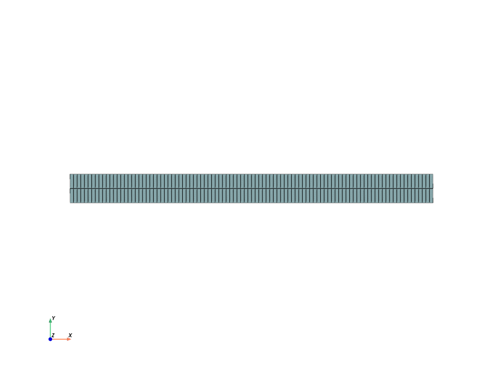
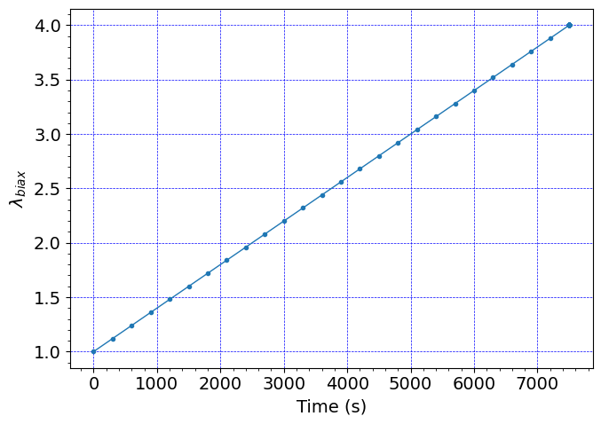
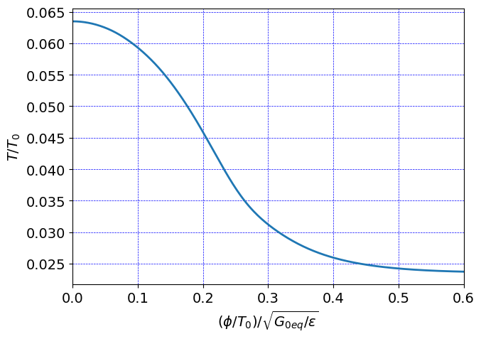
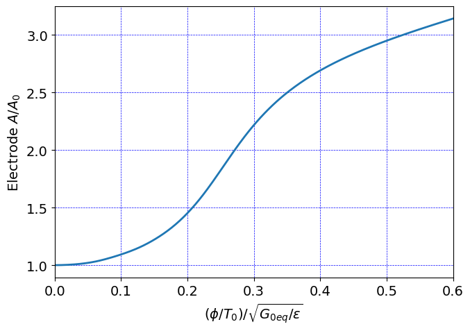

Pre-stretched electro-elastic actuation#
Electro-elastic instability suppresion study on a circular VHB membrane
Units#
Length: mm
Mass: kg
Time: s
Charge: nC
Force: mN
Stress: kPa
Energy: microJ
Electric potential: kV
Software:#
Dolfinx v0.8.0
In the collection “Example Codes for Coupled Theories in Solid Mechanics,”
By Eric M. Stewart, Shawn A. Chester, and Lallit Anand.
Import modules#
# Import FEnicSx/dolfinx
import dolfinx
# For numerical arrays
import numpy as np
# For MPI-based parallelization
from mpi4py import MPI
comm = MPI.COMM_WORLD
rank = comm.Get_rank()
# PETSc solvers
from petsc4py import PETSc
# specific functions from dolfinx modules
from dolfinx import fem, mesh, io, plot, log
from dolfinx.fem import (Constant, dirichletbc, Function, functionspace, Expression )
from dolfinx.fem.petsc import NonlinearProblem
from dolfinx.nls.petsc import NewtonSolver
from dolfinx.io import VTXWriter, XDMFFile
# specific functions from ufl modules
import ufl
from ufl import (TestFunctions, TrialFunction, Identity, grad, det, div, dev, inv, tr, sqrt, conditional ,\
gt, dx, inner, derivative, dot, ln, split, exp, eq, cos, acos, ge, le, outer)
# basix finite elements
import basix
from basix.ufl import element, mixed_element, quadrature_element
# Matplotlib for plotting
import matplotlib.pyplot as plt
plt.close('all')
# For timing the code
from datetime import datetime
# Set level of detail for log messages (integer)
# Guide:
# CRITICAL = 50, // errors that may lead to data corruption
# ERROR = 40, // things that HAVE gone wrong
# WARNING = 30, // things that MAY go wrong later
# INFO = 20, // information of general interest (includes solver info)
# PROGRESS = 16, // what's happening (broadly)
# TRACE = 13, // what's happening (in detail)
# DBG = 10 // sundry
#
log.set_log_level(log.LogLevel.WARNING)
Define geometry#
# A 2-D box with square cross-section
preStretch = 4.000 # equi-biaxial pre-stretch for the film
#
# We choose reference length and electrode radius so that the
# spatial electrode radius is ~2.5mm as in Pelrine et al. (2000), and
# the spatial overall radius is 10mm (with a pre-stretch of 4).
#
length = 10/preStretch # 2.5 # undeformed radius, mm
electrode = length/3 # 0.825 # undeformed radius, mm
#
# the reference thickness is known, 200 um is standard for 3M VHB adhesive tape.
thickness = 0.2 # undeformed thickness, mm
# thickness = 1.0 # undeformed thickness, mm
domain = mesh.create_rectangle(MPI.COMM_WORLD, [[0.0,0.0], [length,thickness]],\
[100,2], mesh.CellType.quadrilateral)#, diagonal=mesh.DiagonalType.crossed)
x = ufl.SpatialCoordinate(domain)
# Identify the planar boundaries of the box mesh
#
def Left(x):
return np.isclose(x[0], 0.0)
def Right(x):
return np.isclose(x[0], length)
def Top(x):
return np.isclose(x[1], thickness)
def Bottom(x):
return np.isclose(x[1], 0.0)
def BotLeft(x):
return np.logical_and(np.isclose(x[1], 0.0), np.isclose(x[0], 0.0))
def TopElectrode(x):
return np.logical_and(np.isclose(x[1],thickness), np.less_equal(x[0],electrode))
def BotElectrode(x):
return np.logical_and(np.isclose(x[1],0), np.less_equal(x[0],electrode))
def TopNotElectrode(x):
return np.logical_and(np.isclose(x[1],thickness), np.greater(x[0],electrode))
def BotNotElectrode(x):
return np.logical_and(np.isclose(x[1],0), np.greater(x[0],electrode))
# Mark the sub-domains
boundaries = [(1,Left),(2,Bottom),(3,Right),(4,Top),(5,TopElectrode),(6,BotElectrode),\
(7,TopNotElectrode),(8,BotNotElectrode)]
# Build collections of facets on each subdomain and mark them appropriately.
facet_indices, facet_markers = [], [] # initalize empty collections of indices and markers.
fdim = domain.topology.dim - 1 # geometric dimension of the facet (mesh dimension - 1)
for (marker, locator) in boundaries:
facets = mesh.locate_entities(domain, fdim, locator) # an array of all the facets in a
# given subdomain ("locator")
facet_indices.append(facets) # add these facets to the collection.
facet_markers.append(np.full_like(facets, marker)) # mark them with the appropriate index.
# Format the facet indices and markers as required for use in dolfinx.
facet_indices = np.hstack(facet_indices).astype(np.int32)
facet_markers = np.hstack(facet_markers).astype(np.int32)
sorted_facets = np.argsort(facet_indices)
#
# Add these marked facets as "mesh tags" for later use in BCs.
facet_tags = mesh.meshtags(domain, fdim, facet_indices[sorted_facets], facet_markers[sorted_facets])
Print out the unique facet index numbers
# top_imap = domain.topology.index_map(2) # index map of 2D entities in domain (facets)
# values = np.zeros(top_imap.size_global) # an array of zeros of the same size as number of 2D entities
# values[facet_tags.indices]=facet_tags.values # populating the array with facet tag index numbers
print(np.unique(facet_tags.values)) # printing the unique indices
[1 2 3 4 5 6 7 8]
Visualize reference configuration and boundary facets
import pyvista
pyvista.set_jupyter_backend('html')
from dolfinx.plot import vtk_mesh
pyvista.start_xvfb()
# initialize a plotter
plotter = pyvista.Plotter()
# LeftFace = pyvista.UnstructuredGrid(*vtk_mesh(domain, domain.topology.dim-1,facet_tags.indices[facet_tags.values==1]) )
# RightFace = pyvista.UnstructuredGrid(*vtk_mesh(domain, domain.topology.dim-1,facet_tags.indices[facet_tags.values==3]) )
# TopFace = pyvista.UnstructuredGrid(*vtk_mesh(domain, domain.topology.dim-1,facet_tags.indices[facet_tags.values==4]) )
# BotFace = pyvista.UnstructuredGrid(*vtk_mesh(domain, domain.topology.dim-1,facet_tags.indices[facet_tags.values==2]) )
# actor = plotter.add_mesh(LeftFace, show_edges=True,color="purple")
# actor1 = plotter.add_mesh(RightFace, show_edges=True,color="blue")
# actor2 = plotter.add_mesh(TopFace, show_edges=True,color="red")
# actor3 = plotter.add_mesh(BotFace, show_edges=True,color="green")
# Add the mesh.
topology, cell_types, geometry = plot.vtk_mesh(domain, domain.topology.dim)
grid = pyvista.UnstructuredGrid(topology, cell_types, geometry)
plotter.add_mesh(grid, show_edges=True)
plotter.view_xy()
labels = dict( xlabel='X', ylabel='Y')
plotter.add_axes(**labels)
plotter.screenshot("results/membrane_mesh.png")
from IPython.display import Image
Image(filename='results/membrane_mesh.png')

Un-comment this cell to see an interactive visualization of the mesh#
# plotter.show()
Define boundary and volume integration measure#
# Define the boundary integration measure "ds" using the facet tags,
# also specify the number of surface quadrature points.
ds = ufl.Measure('ds', domain=domain, subdomain_data=facet_tags, metadata={'quadrature_degree':2})
# Define the volume integration measure "dx"
# also specify the number of volume quadrature points.
dx = ufl.Measure('dx', domain=domain, metadata={'quadrature_degree': 2})
# Create facet to cell connectivity required to determine boundary facets.
domain.topology.create_connectivity(domain.topology.dim, domain.topology.dim)
domain.topology.create_connectivity(domain.topology.dim, domain.topology.dim-1)
domain.topology.create_connectivity(domain.topology.dim-1, domain.topology.dim)
# # Define facet normal
n2D = ufl.FacetNormal(domain)
n = ufl.as_vector([n2D[0], n2D[1], 0.0]) # define n as a 3D vector for later use
Material parameters#
# Equilibrium material parameters
#
rho = Constant(domain, PETSc.ScalarType(1e-6)) # 1000 kg/m^3 = 1e-6 kg/mm^3
#
Geq_0 = Constant(domain, PETSc.ScalarType(15.0)) # Shear modulus, kPa
Kbulk = Constant(domain, PETSc.ScalarType(1e3*Geq_0)) # Bulk modulus, kPa
# I_m = Constant(domain, PETSc.ScalarType(175.0)) # Gent locking parameter
I_m = Constant(domain, PETSc.ScalarType(90.0)) # Gent locking parameter
# Electrostatic parameters
vareps_0 = Constant(domain, PETSc.ScalarType(8.85E-3)) # permittivity of free space pF/mm
vareps_r = Constant(domain, PETSc.ScalarType(4.8)) # relative permittivity, dimensionless
vareps = vareps_r*vareps_0 # permittivity of the material
Function spaces#
U2 = element("Lagrange", domain.basix_cell(), 2, shape=(2,)) # For displacement
P1 = element("Lagrange", domain.basix_cell(), 1) # For pressure and electric potential
#
TH = mixed_element([U2, P1, P1]) # Taylor-Hood style mixed element
ME = functionspace(domain, TH) # Total space for all DOFs
#
V1 = functionspace(domain, P1) # Scalar function space.
V2 = functionspace(domain, U2) # Vector function space
#
# Define actual functions with the required DOFs
w = Function(ME)
u, p, phi = split(w) # displacement u, presssure p, and electric potential phi
# A copy of functions to store values in the previous step
w_old = Function(ME)
u_old, p_old, phi_old = split(w_old)
# Define test functions
u_test, p_test, phi_test = TestFunctions(ME)
# Define trial functions needed for automatic differentiation
dw = TrialFunction(ME)
# # Initial conditions:
# # A function for constructing the identity matrix.
# #
# # To use the interpolate() feature, this must be defined as a
# # function of x.
# def identity(x):
# values = np.zeros(((domain.geometry.dim+1)*(domain.geometry.dim+1),
# x.shape[1]), dtype=np.float64)
# values[0] = 1
# values[4] = 1
# values[8] = 1
# return values
Initial conditions#
The initial conditions for degrees of freedom \(\mathbf{u}\), \(p\), and \(\phi\) are zero everywhere
These are imposed automatically, since we have not specified any non-zero initial conditions.
Subroutines for kinematics and constitutive equations#
#-------------------------------------------------------------
# Utility subroutines
#-------------------------------------------------------------
# Subroutine for a "safer" sqrt() function which avoids a divide by zero
# when differentiated.
def safe_sqrt(x):
return sqrt(x + 1.0e-16)
#Special gradient operators for axisymmetric functions
#
# Gradient of vector field u for axisymmetric
def axi_grad_vector(u):
grad_u = grad(u)
axi_grad_33_exp = conditional(eq(x[0], 0), 0.0, u[0]/x[0])
axi_grad_u = ufl.as_tensor([[grad_u[0,0], grad_u[0,1], 0],
[grad_u[1,0], grad_u[1,1], 0],
[0, 0, axi_grad_33_exp]])
return axi_grad_u
# Gradient of scalar field y
# (just need an extra zero for dimensions to work out)
def axi_grad_scalar(y):
grad_y = grad(y)
axi_grad_y = ufl.as_vector([grad_y[0], grad_y[1], 0.])
return axi_grad_y
#-------------------------------------------------------------
# Subroutines for kinematics
#-------------------------------------------------------------
# Axisymmetric deformation gradient
def F_axi_calc(u):
dim = len(u) # dimension of problem (2)
Id = Identity(dim) # 2D Identity tensor
F = Id + grad(u) # 2D Deformation gradient
F33_exp = 1.0 + u[0]/x[0] # axisymmetric F33, R/R0
F33 = conditional(eq(x[0], 0.0), 1.0, F33_exp) # avoid divide by zero at r=0
F_axi = ufl.as_tensor([[F[0,0], F[0,1], 0],
[F[1,0], F[1,1], 0],
[0, 0, F33]]) # Full axisymmetric F
return F_axi
# Subrountine for computing the effective stretch
def lambdaBar_calc(u):
F = F_axi_calc(u)
J = det(F)
Fbar = J**(-1/3)*F
Cbar = Fbar.T*Fbar
I1 = tr(Cbar)
lambdaBar = safe_sqrt(I1/3.0)
return lambdaBar
#-------------------------------------------------------------
# Subroutines for calculating the electric field and displacement
#-------------------------------------------------------------
# Referential electric displacement
def Dmat_calc(u, phi):
F = F_axi_calc(u)
J = det(F)
C = F.T*F
e_R = - axi_grad_scalar(phi) # referential electric field
Dmat = vareps * J* inv(C)*e_R
return Dmat
#-------------------------------------------------------------
# Subroutines for calculating the Cauchy stress
#-------------------------------------------------------------
# Generalized shear modulus for Gent model
def Geq_Gent_calc(u):
F = F_axi_calc(u)
J = det(F)
C = F.T*F
Cdis = J**(-2/3)*C
I1 = tr(Cdis)
z = I1-3
z = conditional( gt(z, I_m), 0.95*I_m, z ) # Keep from blowing up
Geq_Gent = Geq_0 * (I_m/(I_m - z))
return Geq_Gent
# Subroutine for calculating the equilibrium Cauchy stress
def T_eq_calc(u,p):
F = F_axi_calc(u)
J = det(F)
Fbar = J**(-1./3.)*F
Bbar = Fbar*Fbar.T
Geq = Geq_Gent_calc(u)
T_eq = (1/J)* Geq * dev(Bbar) - p * Identity(3)
return T_eq
# Subroutine for calculating the electrotatic contribution to the Cauchy stress
def T_maxw_calc(u,phi):
F = F_axi_calc(u)
e_R = - grad(phi) # referential electric field
e_sp = inv(F.T)*e_R # spatial electric field
# Spatial Maxwel stress
T_maxw = vareps*(outer(e_sp,e_sp) - 1/2*(inner(e_sp,e_sp))*Identity(3))
return T_maxw
#-------------------------------------------------------------
# Subroutine for calculating the total Piola stress
#-------------------------------------------------------------
# Subroutine for the total Piola stress.
def Piola_calc(u, p):
F = F_axi_calc(u)
J = det(F)
T_eq = T_eq_calc(u,p)
T_maxw = T_maxw_calc(u,phi)
T = T_eq + T_maxw
Piola = J*T*inv(F.T)
return Piola
Evaluate kinematics and constitutive relations#
# Kinematical quantities
F = F_axi_calc(u)
J = det(F)
lambdaBar = lambdaBar_calc(u)
# Referential electric displacement
Dmat = Dmat_calc(u, phi)
# Evaulate the total Piola stress
Piola = Piola_calc(u, p)
Weak forms#
# The weak form for the equilibrium equation
#
Res_1 = inner( Piola, axi_grad_vector(u_test))*x[0]*dx
# The auxiliary equation for the pressure
#
Res_2 = inner((p/Kbulk + ln(J)/J) , p_test)*x[0]*dx
# The weak form for Gauss's equation
Res_3 = inner(Dmat, axi_grad_scalar(phi_test))*x[0]*dx
# The total residual
Res = Res_1 + Res_2 + Res_3
# Automatic differentiation tangent:
a = derivative(Res, w, dw)
Set-up output files#
# results file name
results_name = "axi_prestretch_membrane"
# Function space for projection of results
P1 = element("Lagrange", domain.basix_cell(), 1)
VV1 = fem.functionspace(domain, P1) # linear scalar function space
#
U1 = element("Lagrange", domain.basix_cell(), 1, shape=(2,))
VV2 = fem.functionspace(domain, U1) # linear Vector function space
#
T1 = element("Lagrange", domain.basix_cell(), 1, shape=(3,3))
VV3 = fem.functionspace(domain, T1) # linear tensor function space
# For visualization purposes, we need to re-project the stress tensor onto a linear function space before
# we write it (and its components and the von Mises stress, etc) to the VTX file.
#
# This is because the stress is a complicated "mixed" function of the (quadratic Lagrangian) displacements
# and the (quadrature representation) plastic strain tensor and scalar equivalent plastic strain.
#
# First, define a function for setting up this kind of projection problem for visualization purposes and
# make sure we do it axisymetric:
def setup_projection(u, V):
trial = ufl.TrialFunction(V)
test = ufl.TestFunction(V)
a = ufl.inner(trial, test)*x[0]*dx
L = ufl.inner(u, test)*x[0]*dx
projection_problem = dolfinx.fem.petsc.LinearProblem(a, L, [], \
petsc_options={"ksp_type": "cg", "ksp_rtol": 1e-16, "ksp_atol": 1e-16, "ksp_max_it": 1000})
return projection_problem
# Create a linear problem for projecting the stress tensor onto the linear tensor function space VV3.
#
tensor_projection_problem = setup_projection(Piola, VV3)
Piola_temp = tensor_projection_problem.solve()
# primary fields to write to output file
u_vis = Function(VV2, name="disp")
p_vis = Function(VV1, name="p")
phi_vis = Function(VV1, name="phi")
# Mises stress
T = Piola_temp*F.T/J
T0 = T - (1/3)*tr(T)*Identity(3)
Mises = sqrt((3/2)*inner(T0, T0))
Mises_vis= Function(VV1,name="Mises")
Mises_expr = Expression(Mises,VV1.element.interpolation_points())
# Cauchy stress components
T11 = Function(VV1)
T11.name = "T11"
T11_expr = Expression(T[0,0],VV1.element.interpolation_points())
T22 = Function(VV1)
T22.name = "T22"
T22_expr = Expression(T[1,1],VV1.element.interpolation_points())
T33 = Function(VV1)
T33.name = "T33"
T33_expr = Expression(T[2,2],VV1.element.interpolation_points())
# Stretch measure
lambdaBar_vis = Function(VV1)
lambdaBar_vis.name = "lambdaBar"
lambdaBar_expr = Expression(lambdaBar, VV1.element.interpolation_points())
# Volumetric deformation
J_vis = Function(VV1)
J_vis.name = "J"
J_expr = Expression(J, VV1.element.interpolation_points())
# set up the output VTX files.
file_results = VTXWriter(
MPI.COMM_WORLD,
"results/" + results_name + ".bp",
[ # put the functions here you wish to write to output
u_vis, p_vis, phi_vis, # DOF outputs
Mises_vis, T11, T22, T33, # stress outputs
lambdaBar_vis, J_vis, # Kinematical outputs
],
engine="BP4",
)
def writeResults(t):
# Update the output fields before writing to VTX.
#
u_vis.interpolate(w.sub(0))
p_vis.interpolate(w.sub(1))
phi_vis.interpolate(w.sub(2))
#
# re-project to smooth visualization of quadrature functions
# before interpolating.
Piola_temp = tensor_projection_problem.solve()
Mises_vis.interpolate(Mises_expr)
T11.interpolate(T11_expr)
T22.interpolate(T22_expr)
T33.interpolate(T33_expr)
#
lambdaBar_vis.interpolate(lambdaBar_expr)
J_vis.interpolate(J_expr)
# Finally, write output fields to VTX.
#
file_results.write(t)
Infrastructure for pulling out time history data (force, displacement, etc.)#
# # computing the reaction force using the stress field
# traction = dot(Piola_temp, n)
# Force = dot(traction, n)*ds(4)
# rxnForce = fem.form(Force)
# infrastructure for evaluating functions at a certain point efficiently
pointForEvalA = np.array([length,thickness,0])
pointForEvalB = np.array([0,thickness,0])
pointForEvalC = np.array([electrode,thickness,0])
bb_tree = dolfinx.geometry.bb_tree(domain,domain.topology.dim)
cell_candidates = dolfinx.geometry.compute_collisions_points(bb_tree, pointForEvalA)
colliding_cellsA = dolfinx.geometry.compute_colliding_cells(domain, cell_candidates, pointForEvalA).array
bb_tree = dolfinx.geometry.bb_tree(domain,domain.topology.dim)
cell_candidates = dolfinx.geometry.compute_collisions_points(bb_tree, pointForEvalB)
colliding_cellsB = dolfinx.geometry.compute_colliding_cells(domain, cell_candidates, pointForEvalB).array
bb_tree = dolfinx.geometry.bb_tree(domain,domain.topology.dim)
cell_candidates = dolfinx.geometry.compute_collisions_points(bb_tree, pointForEvalC)
colliding_cellsC = dolfinx.geometry.compute_colliding_cells(domain, cell_candidates, pointForEvalC).array
Boundary condtions#
# Constant for applied electric potential
phi_cons = Constant(domain,PETSc.ScalarType(PhiRamp(0)))
disp_cons = Constant(domain,PETSc.ScalarType(DispRamp(0)))
# Find the specific DOFs which will be constrained.
Left_u1_dofs = fem.locate_dofs_topological(ME.sub(0).sub(0), facet_tags.dim, facet_tags.find(1))
Right_u1_dofs = fem.locate_dofs_topological(ME.sub(0).sub(0), facet_tags.dim, facet_tags.find(3))
#
Top_phi_dofs = fem.locate_dofs_topological(ME.sub(2), facet_tags.dim, facet_tags.find(5))
Bot_phi_dofs = fem.locate_dofs_topological(ME.sub(2), facet_tags.dim, facet_tags.find(6))
# building Dirichlet BCs
bcs_1 = dirichletbc(0.0, Left_u1_dofs, ME.sub(0).sub(0)) # u1 fix - Left
bcs_2 = dirichletbc(disp_cons, Right_u1_dofs, ME.sub(0).sub(0)) # u1 stretch - Right
#
bcs_3 = dirichletbc(phi_cons, Top_phi_dofs, ME.sub(2)) # phi ramp - Top electrode
bcs_4 = dirichletbc(0.0, Bot_phi_dofs, ME.sub(2)) # phi ground - Bot electrode
# Zero displacement boundary conditions for the fixed point in the bottom left
#
V0, submap = ME.sub(0).collapse()
#
fixed_u_dofs = fem.locate_dofs_geometrical((ME.sub(0).sub(1), V0), BotLeft)
fixed_disp = Function(V0)
fixed_disp.interpolate(lambda x: np.stack(( np.zeros(x.shape[1]), np.zeros(x.shape[1]) ) ) )
#
bcs_5 = dirichletbc(fixed_disp, fixed_u_dofs, ME.sub(0)) # u fix - Bottom left corner
# Bot_u2_dofs = fem.locate_dofs_topological(ME.sub(0).sub(1), facet_tags.dim, facet_tags.find(2))
# bcs_5 = dirichletbc(0.0, Bot_u2_dofs, ME.sub(0).sub(1)) # u2 fixed on the bottom
bcs = [bcs_1, bcs_2, bcs_3, bcs_4, bcs_5]
Define the nonlinear variational problem#
# Set up nonlinear problem
problem = NonlinearProblem(Res, w, bcs, a)
# the global newton solver and params
solver = NewtonSolver(MPI.COMM_WORLD, problem)
solver.convergence_criterion = "incremental"
solver.rtol = 1e-6
solver.atol = 1e-6
solver.max_it = 50
solver.report = True
# The Krylov solver parameters.
ksp = solver.krylov_solver
opts = PETSc.Options()
option_prefix = ksp.getOptionsPrefix()
opts[f"{option_prefix}ksp_type"] = "preonly" # "preonly" works equally well
opts[f"{option_prefix}pc_type"] = "lu" # do not use 'gamg' pre-conditioner
opts[f"{option_prefix}pc_factor_mat_solver_type"] = "mumps"
opts[f"{option_prefix}ksp_max_it"] = 30
ksp.setFromOptions()
Start calculation loop#
# Variables for storing time history
totSteps = 100000
timeHist0 = np.zeros(shape=[totSteps])
timeHist1 = np.zeros(shape=[totSteps])
timeHist2 = np.zeros(shape=[totSteps])
timeHist3 = np.zeros(shape=[totSteps])
timeHist4 = np.zeros(shape=[totSteps])
# Iinitialize a counter for reporting data
ii=0
# Set up temporary "helper" functions and expressions
# for updating the internal variables.
#
# # For the Cv tensors:
# Cv_1_temp = Function(V3)
# Cv_1_expr = Expression(Cv_1, V3.element.interpolation_points())
# #
# Cv_2_temp = Function(V3)
# Cv_2_expr = Expression(Cv_2, V3.element.interpolation_points())
# #
# Cv_3_temp = Function(V3)
# Cv_3_expr = Expression(Cv_3, V3.element.interpolation_points())
# #
# # and also for the velocity and acceleration.
# v_temp = Function(V2)
# a_temp = Function(V2)
# #
# v_expr = Expression(v_new,V2.element.interpolation_points())
# a_expr = Expression(a_new,V2.element.interpolation_points())
# Write initial state to file
writeResults(t=0.0)
# print a message for simulation startup
print("------------------------------------")
print("Simulation Start")
print("------------------------------------")
# Store start time
startTime = datetime.now()
"""""""""""""""""
STEP 1
"""""""""""""""""
# Give the step a descriptive name
step = "Prestretch"
# Assign the time step size
dt = dt1
dk = Constant(domain, PETSc.ScalarType(dt))
# Time-stepping solution procedure loop
while (round(t + dt, 9) <= step1_time):
# increment time
t += dt
# increment counter
ii += 1
# update time variables in time-dependent BCs
phi_cons.value = PhiRamp(t)
disp_cons.value = DispRamp(t)
# Solve the problem
try:
(iter, converged) = solver.solve(w)
except: # Break the loop if solver fails
print("Did not converge, stopping")
break
# Collect results from MPI ghost processes
w.x.scatter_forward()
# Print progress of calculation
if ii%1 == 0:
now = datetime.now()
current_time = now.strftime("%H:%M:%S")
print("Step: {} | Increment: {} | Iterations: {}".format(step, ii, iter))
print("dt: {} | Simulation Time: {} s | Percent of total time: {}%".format(round(dt1,4), round(t,4), round(100*t/(step1_time+step2_time),4)))
print()
# Write output to file
writeResults(t)
# Store time history variables at this time
timeHist0[ii] = w.sub(0).sub(0).eval([length, thickness, 0],colliding_cellsA[0])[0] # time history of displacement
timeHist1[ii] = w.sub(2).eval([0,thickness,0],colliding_cellsB[0])[0] # time history of voltage phi
timeHist2[ii] = t # current time
timeHist3[ii] = w.sub(0).sub(0).eval([electrode, thickness, 0],colliding_cellsC[0])[0] # time history of electrode displacement
timeHist4[ii] = w.sub(0).sub(1).eval([0,thickness,0],colliding_cellsB[0])[0] # time history of actuator thinning
# # update internal variables
# #
# # interpolate the values of the internal variables into their "temp" functions
# Cv_1_temp.interpolate(Cv_1_expr)
# Cv_2_temp.interpolate(Cv_2_expr)
# Cv_3_temp.interpolate(Cv_3_expr)
# #
# v_temp.interpolate(v_expr)
# a_temp.interpolate(a_expr)
# Update DOFs for next step
w_old.x.array[:] = w.x.array
# # update the old values of internal variables for next step
# Cv_1_old.x.array[:] = Cv_1_temp.x.array[:]
# Cv_2_old.x.array[:] = Cv_2_temp.x.array[:]
# Cv_3_old.x.array[:] = Cv_3_temp.x.array[:]
# #
# v_old.x.array[:] = v_temp.x.array[:]
# a_old.x.array[:] = a_temp.x.array[:]
# store the electrode radius at this point, for relative area calculations later
electrodeRad = electrode + w.sub(0).sub(0).eval([electrode, thickness, 0],colliding_cellsC[0])[0]
electrodeThick = thickness - w.sub(0).sub(1).eval([0, thickness, 0],colliding_cellsB[0])[0]
"""""""""""""""""
STEP 2
"""""""""""""""""
# Give the step a descriptive name
step = "Actuate"
# assign the time step size
dt = dt2
dk.value = dt
# Time-stepping solution procedure loop
while (round(t + dt, 9) <= step1_time + step2_time):
# increment time
t += dt
# increment counter
ii += 1
# update time variables in time-dependent BCs
phi_cons.value = PhiRamp(t)
disp_cons.value = DispRamp(t)
# Solve the problem
try:
(iter, converged) = solver.solve(w)
except: # Break the loop if solver fails
print("Did not converge, stopping")
break
# Collect results from MPI ghost processes
w.x.scatter_forward()
# Print progress of calculation
if ii%1 == 0:
now = datetime.now()
current_time = now.strftime("%H:%M:%S")
print("Step: {} | Increment: {} | Iterations: {}".format(step, ii, iter))
print("dt: {} | Simulation Time: {} s | Percent of total time: {}%".format(round(dt2,4), round(t,4), round(100*t/(step1_time+step2_time),4)))
print()
# Write output to file
writeResults(t)
# Store time history variables at this time
timeHist0[ii] = w.sub(0).sub(0).eval([length, thickness, 0],colliding_cellsA[0])[0] # time history of displacement
timeHist1[ii] = w.sub(2).eval([0,thickness,0],colliding_cellsB[0])[0] # time history of voltage phi
timeHist2[ii] = t # current time
timeHist3[ii] = w.sub(0).sub(0).eval([electrode, thickness, 0],colliding_cellsC[0])[0] # time history of electrode displacement
timeHist4[ii] = w.sub(0).sub(1).eval([0,thickness,0],colliding_cellsB[0])[0] # time history of actuator thinning
# # update internal variables
# #
# # interpolate the values of the internal variables into their "temp" functions
# Cv_1_temp.interpolate(Cv_1_expr)
# Cv_2_temp.interpolate(Cv_2_expr)
# Cv_3_temp.interpolate(Cv_3_expr)
# #
# v_temp.interpolate(v_expr)
# a_temp.interpolate(a_expr)
# Update DOFs for next step
w_old.x.array[:] = w.x.array
# # update the old values of internal variables for next step
# Cv_1_old.x.array[:] = Cv_1_temp.x.array[:]
# Cv_2_old.x.array[:] = Cv_2_temp.x.array[:]
# Cv_3_old.x.array[:] = Cv_3_temp.x.array[:]
# #
# v_old.x.array[:] = v_temp.x.array[:]
# a_old.x.array[:] = a_temp.x.array[:]
# close the output file.
file_results.close()
# End analysis
print("-----------------------------------------")
print("End computation")
# Report elapsed real time for the analysis
endTime = datetime.now()
elapseTime = endTime - startTime
print("------------------------------------------")
print("Elapsed real time: {}".format(elapseTime))
print("------------------------------------------")
------------------------------------
Simulation Start
------------------------------------
Step: Prestretch | Increment: 1 | Iterations: 5
dt: 300.0 | Simulation Time: 300.0 s | Percent of total time: 3.9995%
Step: Prestretch | Increment: 2 | Iterations: 5
dt: 300.0 | Simulation Time: 600.0 s | Percent of total time: 7.9989%
Step: Prestretch | Increment: 3 | Iterations: 5
dt: 300.0 | Simulation Time: 900.0 s | Percent of total time: 11.9984%
Step: Prestretch | Increment: 4 | Iterations: 5
dt: 300.0 | Simulation Time: 1200.0 s | Percent of total time: 15.9979%
Step: Prestretch | Increment: 5 | Iterations: 4
dt: 300.0 | Simulation Time: 1500.0 s | Percent of total time: 19.9973%
Step: Prestretch | Increment: 6 | Iterations: 4
dt: 300.0 | Simulation Time: 1800.0 s | Percent of total time: 23.9968%
Step: Prestretch | Increment: 7 | Iterations: 4
dt: 300.0 | Simulation Time: 2100.0 s | Percent of total time: 27.9963%
Step: Prestretch | Increment: 8 | Iterations: 4
dt: 300.0 | Simulation Time: 2400.0 s | Percent of total time: 31.9957%
Step: Prestretch | Increment: 9 | Iterations: 4
dt: 300.0 | Simulation Time: 2700.0 s | Percent of total time: 35.9952%
Step: Prestretch | Increment: 10 | Iterations: 4
dt: 300.0 | Simulation Time: 3000.0 s | Percent of total time: 39.9947%
Step: Prestretch | Increment: 11 | Iterations: 4
dt: 300.0 | Simulation Time: 3300.0 s | Percent of total time: 43.9941%
Step: Prestretch | Increment: 12 | Iterations: 4
dt: 300.0 | Simulation Time: 3600.0 s | Percent of total time: 47.9936%
Step: Prestretch | Increment: 13 | Iterations: 4
dt: 300.0 | Simulation Time: 3900.0 s | Percent of total time: 51.9931%
Step: Prestretch | Increment: 14 | Iterations: 4
dt: 300.0 | Simulation Time: 4200.0 s | Percent of total time: 55.9925%
Step: Prestretch | Increment: 15 | Iterations: 4
dt: 300.0 | Simulation Time: 4500.0 s | Percent of total time: 59.992%
Step: Prestretch | Increment: 16 | Iterations: 4
dt: 300.0 | Simulation Time: 4800.0 s | Percent of total time: 63.9915%
Step: Prestretch | Increment: 17 | Iterations: 4
dt: 300.0 | Simulation Time: 5100.0 s | Percent of total time: 67.9909%
Step: Prestretch | Increment: 18 | Iterations: 4
dt: 300.0 | Simulation Time: 5400.0 s | Percent of total time: 71.9904%
Step: Prestretch | Increment: 19 | Iterations: 4
dt: 300.0 | Simulation Time: 5700.0 s | Percent of total time: 75.9899%
Step: Prestretch | Increment: 20 | Iterations: 4
dt: 300.0 | Simulation Time: 6000.0 s | Percent of total time: 79.9893%
Step: Prestretch | Increment: 21 | Iterations: 4
dt: 300.0 | Simulation Time: 6300.0 s | Percent of total time: 83.9888%
Step: Prestretch | Increment: 22 | Iterations: 4
dt: 300.0 | Simulation Time: 6600.0 s | Percent of total time: 87.9883%
Step: Prestretch | Increment: 23 | Iterations: 4
dt: 300.0 | Simulation Time: 6900.0 s | Percent of total time: 91.9877%
Step: Prestretch | Increment: 24 | Iterations: 4
dt: 300.0 | Simulation Time: 7200.0 s | Percent of total time: 95.9872%
Step: Prestretch | Increment: 25 | Iterations: 4
dt: 300.0 | Simulation Time: 7500.0 s | Percent of total time: 99.9867%
Step: Actuate | Increment: 26 | Iterations: 4
dt: 0.0033 | Simulation Time: 7500.0033 s | Percent of total time: 99.9867%
Step: Actuate | Increment: 27 | Iterations: 4
dt: 0.0033 | Simulation Time: 7500.0067 s | Percent of total time: 99.9868%
Step: Actuate | Increment: 28 | Iterations: 4
dt: 0.0033 | Simulation Time: 7500.01 s | Percent of total time: 99.9868%
Step: Actuate | Increment: 29 | Iterations: 4
dt: 0.0033 | Simulation Time: 7500.0133 s | Percent of total time: 99.9868%
Step: Actuate | Increment: 30 | Iterations: 4
dt: 0.0033 | Simulation Time: 7500.0167 s | Percent of total time: 99.9869%
Step: Actuate | Increment: 31 | Iterations: 4
dt: 0.0033 | Simulation Time: 7500.02 s | Percent of total time: 99.9869%
Step: Actuate | Increment: 32 | Iterations: 4
dt: 0.0033 | Simulation Time: 7500.0233 s | Percent of total time: 99.987%
Step: Actuate | Increment: 33 | Iterations: 4
dt: 0.0033 | Simulation Time: 7500.0267 s | Percent of total time: 99.987%
Step: Actuate | Increment: 34 | Iterations: 4
dt: 0.0033 | Simulation Time: 7500.03 s | Percent of total time: 99.9871%
Step: Actuate | Increment: 35 | Iterations: 4
dt: 0.0033 | Simulation Time: 7500.0333 s | Percent of total time: 99.9871%
Step: Actuate | Increment: 36 | Iterations: 4
dt: 0.0033 | Simulation Time: 7500.0367 s | Percent of total time: 99.9872%
Step: Actuate | Increment: 37 | Iterations: 4
dt: 0.0033 | Simulation Time: 7500.04 s | Percent of total time: 99.9872%
Step: Actuate | Increment: 38 | Iterations: 4
dt: 0.0033 | Simulation Time: 7500.0433 s | Percent of total time: 99.9872%
Step: Actuate | Increment: 39 | Iterations: 4
dt: 0.0033 | Simulation Time: 7500.0467 s | Percent of total time: 99.9873%
Step: Actuate | Increment: 40 | Iterations: 4
dt: 0.0033 | Simulation Time: 7500.05 s | Percent of total time: 99.9873%
Step: Actuate | Increment: 41 | Iterations: 4
dt: 0.0033 | Simulation Time: 7500.0533 s | Percent of total time: 99.9874%
Step: Actuate | Increment: 42 | Iterations: 4
dt: 0.0033 | Simulation Time: 7500.0567 s | Percent of total time: 99.9874%
Step: Actuate | Increment: 43 | Iterations: 4
dt: 0.0033 | Simulation Time: 7500.06 s | Percent of total time: 99.9875%
Step: Actuate | Increment: 44 | Iterations: 4
dt: 0.0033 | Simulation Time: 7500.0633 s | Percent of total time: 99.9875%
Step: Actuate | Increment: 45 | Iterations: 5
dt: 0.0033 | Simulation Time: 7500.0667 s | Percent of total time: 99.9876%
Step: Actuate | Increment: 46 | Iterations: 4
dt: 0.0033 | Simulation Time: 7500.07 s | Percent of total time: 99.9876%
Step: Actuate | Increment: 47 | Iterations: 4
dt: 0.0033 | Simulation Time: 7500.0733 s | Percent of total time: 99.9876%
Step: Actuate | Increment: 48 | Iterations: 4
dt: 0.0033 | Simulation Time: 7500.0767 s | Percent of total time: 99.9877%
Step: Actuate | Increment: 49 | Iterations: 4
dt: 0.0033 | Simulation Time: 7500.08 s | Percent of total time: 99.9877%
Step: Actuate | Increment: 50 | Iterations: 4
dt: 0.0033 | Simulation Time: 7500.0833 s | Percent of total time: 99.9878%
Step: Actuate | Increment: 51 | Iterations: 5
dt: 0.0033 | Simulation Time: 7500.0867 s | Percent of total time: 99.9878%
Step: Actuate | Increment: 52 | Iterations: 4
dt: 0.0033 | Simulation Time: 7500.09 s | Percent of total time: 99.9879%
Step: Actuate | Increment: 53 | Iterations: 4
dt: 0.0033 | Simulation Time: 7500.0933 s | Percent of total time: 99.9879%
Step: Actuate | Increment: 54 | Iterations: 4
dt: 0.0033 | Simulation Time: 7500.0967 s | Percent of total time: 99.988%
Step: Actuate | Increment: 55 | Iterations: 4
dt: 0.0033 | Simulation Time: 7500.1 s | Percent of total time: 99.988%
Step: Actuate | Increment: 56 | Iterations: 5
dt: 0.0033 | Simulation Time: 7500.1033 s | Percent of total time: 99.988%
Step: Actuate | Increment: 57 | Iterations: 4
dt: 0.0033 | Simulation Time: 7500.1067 s | Percent of total time: 99.9881%
Step: Actuate | Increment: 58 | Iterations: 4
dt: 0.0033 | Simulation Time: 7500.11 s | Percent of total time: 99.9881%
Step: Actuate | Increment: 59 | Iterations: 5
dt: 0.0033 | Simulation Time: 7500.1133 s | Percent of total time: 99.9882%
Step: Actuate | Increment: 60 | Iterations: 4
dt: 0.0033 | Simulation Time: 7500.1167 s | Percent of total time: 99.9882%
Step: Actuate | Increment: 61 | Iterations: 4
dt: 0.0033 | Simulation Time: 7500.12 s | Percent of total time: 99.9883%
Step: Actuate | Increment: 62 | Iterations: 4
dt: 0.0033 | Simulation Time: 7500.1233 s | Percent of total time: 99.9883%
Step: Actuate | Increment: 63 | Iterations: 4
dt: 0.0033 | Simulation Time: 7500.1267 s | Percent of total time: 99.9884%
Step: Actuate | Increment: 64 | Iterations: 6
dt: 0.0033 | Simulation Time: 7500.13 s | Percent of total time: 99.9884%
Step: Actuate | Increment: 65 | Iterations: 4
dt: 0.0033 | Simulation Time: 7500.1333 s | Percent of total time: 99.9884%
Step: Actuate | Increment: 66 | Iterations: 11
dt: 0.0033 | Simulation Time: 7500.1367 s | Percent of total time: 99.9885%
Step: Actuate | Increment: 67 | Iterations: 4
dt: 0.0033 | Simulation Time: 7500.14 s | Percent of total time: 99.9885%
Step: Actuate | Increment: 68 | Iterations: 4
dt: 0.0033 | Simulation Time: 7500.1433 s | Percent of total time: 99.9886%
Step: Actuate | Increment: 69 | Iterations: 4
dt: 0.0033 | Simulation Time: 7500.1467 s | Percent of total time: 99.9886%
Step: Actuate | Increment: 70 | Iterations: 6
dt: 0.0033 | Simulation Time: 7500.15 s | Percent of total time: 99.9887%
Step: Actuate | Increment: 71 | Iterations: 4
dt: 0.0033 | Simulation Time: 7500.1533 s | Percent of total time: 99.9887%
Step: Actuate | Increment: 72 | Iterations: 4
dt: 0.0033 | Simulation Time: 7500.1567 s | Percent of total time: 99.9888%
Step: Actuate | Increment: 73 | Iterations: 4
dt: 0.0033 | Simulation Time: 7500.16 s | Percent of total time: 99.9888%
Step: Actuate | Increment: 74 | Iterations: 4
dt: 0.0033 | Simulation Time: 7500.1633 s | Percent of total time: 99.9888%
Step: Actuate | Increment: 75 | Iterations: 4
dt: 0.0033 | Simulation Time: 7500.1667 s | Percent of total time: 99.9889%
Step: Actuate | Increment: 76 | Iterations: 4
dt: 0.0033 | Simulation Time: 7500.17 s | Percent of total time: 99.9889%
Step: Actuate | Increment: 77 | Iterations: 4
dt: 0.0033 | Simulation Time: 7500.1733 s | Percent of total time: 99.989%
Step: Actuate | Increment: 78 | Iterations: 4
dt: 0.0033 | Simulation Time: 7500.1767 s | Percent of total time: 99.989%
Step: Actuate | Increment: 79 | Iterations: 5
dt: 0.0033 | Simulation Time: 7500.18 s | Percent of total time: 99.9891%
Step: Actuate | Increment: 80 | Iterations: 4
dt: 0.0033 | Simulation Time: 7500.1833 s | Percent of total time: 99.9891%
Step: Actuate | Increment: 81 | Iterations: 4
dt: 0.0033 | Simulation Time: 7500.1867 s | Percent of total time: 99.9892%
Step: Actuate | Increment: 82 | Iterations: 9
dt: 0.0033 | Simulation Time: 7500.19 s | Percent of total time: 99.9892%
Step: Actuate | Increment: 83 | Iterations: 4
dt: 0.0033 | Simulation Time: 7500.1933 s | Percent of total time: 99.9892%
Step: Actuate | Increment: 84 | Iterations: 5
dt: 0.0033 | Simulation Time: 7500.1967 s | Percent of total time: 99.9893%
Step: Actuate | Increment: 85 | Iterations: 5
dt: 0.0033 | Simulation Time: 7500.2 s | Percent of total time: 99.9893%
Step: Actuate | Increment: 86 | Iterations: 4
dt: 0.0033 | Simulation Time: 7500.2033 s | Percent of total time: 99.9894%
Step: Actuate | Increment: 87 | Iterations: 4
dt: 0.0033 | Simulation Time: 7500.2067 s | Percent of total time: 99.9894%
Step: Actuate | Increment: 88 | Iterations: 5
dt: 0.0033 | Simulation Time: 7500.21 s | Percent of total time: 99.9895%
Step: Actuate | Increment: 89 | Iterations: 4
dt: 0.0033 | Simulation Time: 7500.2133 s | Percent of total time: 99.9895%
Step: Actuate | Increment: 90 | Iterations: 4
dt: 0.0033 | Simulation Time: 7500.2167 s | Percent of total time: 99.9896%
Step: Actuate | Increment: 91 | Iterations: 5
dt: 0.0033 | Simulation Time: 7500.22 s | Percent of total time: 99.9896%
Step: Actuate | Increment: 92 | Iterations: 4
dt: 0.0033 | Simulation Time: 7500.2233 s | Percent of total time: 99.9896%
Step: Actuate | Increment: 93 | Iterations: 4
dt: 0.0033 | Simulation Time: 7500.2267 s | Percent of total time: 99.9897%
Step: Actuate | Increment: 94 | Iterations: 5
dt: 0.0033 | Simulation Time: 7500.23 s | Percent of total time: 99.9897%
Step: Actuate | Increment: 95 | Iterations: 4
dt: 0.0033 | Simulation Time: 7500.2333 s | Percent of total time: 99.9898%
Step: Actuate | Increment: 96 | Iterations: 5
dt: 0.0033 | Simulation Time: 7500.2367 s | Percent of total time: 99.9898%
Step: Actuate | Increment: 97 | Iterations: 5
dt: 0.0033 | Simulation Time: 7500.24 s | Percent of total time: 99.9899%
Step: Actuate | Increment: 98 | Iterations: 4
dt: 0.0033 | Simulation Time: 7500.2433 s | Percent of total time: 99.9899%
Step: Actuate | Increment: 99 | Iterations: 4
dt: 0.0033 | Simulation Time: 7500.2467 s | Percent of total time: 99.99%
Step: Actuate | Increment: 100 | Iterations: 5
dt: 0.0033 | Simulation Time: 7500.25 s | Percent of total time: 99.99%
Step: Actuate | Increment: 101 | Iterations: 4
dt: 0.0033 | Simulation Time: 7500.2533 s | Percent of total time: 99.99%
Step: Actuate | Increment: 102 | Iterations: 4
dt: 0.0033 | Simulation Time: 7500.2567 s | Percent of total time: 99.9901%
Step: Actuate | Increment: 103 | Iterations: 4
dt: 0.0033 | Simulation Time: 7500.26 s | Percent of total time: 99.9901%
Step: Actuate | Increment: 104 | Iterations: 4
dt: 0.0033 | Simulation Time: 7500.2633 s | Percent of total time: 99.9902%
Step: Actuate | Increment: 105 | Iterations: 4
dt: 0.0033 | Simulation Time: 7500.2667 s | Percent of total time: 99.9902%
Step: Actuate | Increment: 106 | Iterations: 5
dt: 0.0033 | Simulation Time: 7500.27 s | Percent of total time: 99.9903%
Step: Actuate | Increment: 107 | Iterations: 4
dt: 0.0033 | Simulation Time: 7500.2733 s | Percent of total time: 99.9903%
Step: Actuate | Increment: 108 | Iterations: 4
dt: 0.0033 | Simulation Time: 7500.2767 s | Percent of total time: 99.9904%
Step: Actuate | Increment: 109 | Iterations: 5
dt: 0.0033 | Simulation Time: 7500.28 s | Percent of total time: 99.9904%
Step: Actuate | Increment: 110 | Iterations: 4
dt: 0.0033 | Simulation Time: 7500.2833 s | Percent of total time: 99.9904%
Step: Actuate | Increment: 111 | Iterations: 5
dt: 0.0033 | Simulation Time: 7500.2867 s | Percent of total time: 99.9905%
Step: Actuate | Increment: 112 | Iterations: 4
dt: 0.0033 | Simulation Time: 7500.29 s | Percent of total time: 99.9905%
Step: Actuate | Increment: 113 | Iterations: 4
dt: 0.0033 | Simulation Time: 7500.2933 s | Percent of total time: 99.9906%
Step: Actuate | Increment: 114 | Iterations: 4
dt: 0.0033 | Simulation Time: 7500.2967 s | Percent of total time: 99.9906%
Step: Actuate | Increment: 115 | Iterations: 4
dt: 0.0033 | Simulation Time: 7500.3 s | Percent of total time: 99.9907%
Step: Actuate | Increment: 116 | Iterations: 4
dt: 0.0033 | Simulation Time: 7500.3033 s | Percent of total time: 99.9907%
Step: Actuate | Increment: 117 | Iterations: 4
dt: 0.0033 | Simulation Time: 7500.3067 s | Percent of total time: 99.9908%
Step: Actuate | Increment: 118 | Iterations: 4
dt: 0.0033 | Simulation Time: 7500.31 s | Percent of total time: 99.9908%
Step: Actuate | Increment: 119 | Iterations: 4
dt: 0.0033 | Simulation Time: 7500.3133 s | Percent of total time: 99.9908%
Step: Actuate | Increment: 120 | Iterations: 4
dt: 0.0033 | Simulation Time: 7500.3167 s | Percent of total time: 99.9909%
Step: Actuate | Increment: 121 | Iterations: 4
dt: 0.0033 | Simulation Time: 7500.32 s | Percent of total time: 99.9909%
Step: Actuate | Increment: 122 | Iterations: 4
dt: 0.0033 | Simulation Time: 7500.3233 s | Percent of total time: 99.991%
Step: Actuate | Increment: 123 | Iterations: 4
dt: 0.0033 | Simulation Time: 7500.3267 s | Percent of total time: 99.991%
Step: Actuate | Increment: 124 | Iterations: 4
dt: 0.0033 | Simulation Time: 7500.33 s | Percent of total time: 99.9911%
Step: Actuate | Increment: 125 | Iterations: 5
dt: 0.0033 | Simulation Time: 7500.3333 s | Percent of total time: 99.9911%
Step: Actuate | Increment: 126 | Iterations: 4
dt: 0.0033 | Simulation Time: 7500.3367 s | Percent of total time: 99.9912%
Step: Actuate | Increment: 127 | Iterations: 4
dt: 0.0033 | Simulation Time: 7500.34 s | Percent of total time: 99.9912%
Step: Actuate | Increment: 128 | Iterations: 4
dt: 0.0033 | Simulation Time: 7500.3433 s | Percent of total time: 99.9912%
Step: Actuate | Increment: 129 | Iterations: 5
dt: 0.0033 | Simulation Time: 7500.3467 s | Percent of total time: 99.9913%
Step: Actuate | Increment: 130 | Iterations: 4
dt: 0.0033 | Simulation Time: 7500.35 s | Percent of total time: 99.9913%
Step: Actuate | Increment: 131 | Iterations: 4
dt: 0.0033 | Simulation Time: 7500.3533 s | Percent of total time: 99.9914%
Step: Actuate | Increment: 132 | Iterations: 4
dt: 0.0033 | Simulation Time: 7500.3567 s | Percent of total time: 99.9914%
Step: Actuate | Increment: 133 | Iterations: 4
dt: 0.0033 | Simulation Time: 7500.36 s | Percent of total time: 99.9915%
Step: Actuate | Increment: 134 | Iterations: 5
dt: 0.0033 | Simulation Time: 7500.3633 s | Percent of total time: 99.9915%
Step: Actuate | Increment: 135 | Iterations: 4
dt: 0.0033 | Simulation Time: 7500.3667 s | Percent of total time: 99.9916%
Step: Actuate | Increment: 136 | Iterations: 4
dt: 0.0033 | Simulation Time: 7500.37 s | Percent of total time: 99.9916%
Step: Actuate | Increment: 137 | Iterations: 6
dt: 0.0033 | Simulation Time: 7500.3733 s | Percent of total time: 99.9916%
Step: Actuate | Increment: 138 | Iterations: 4
dt: 0.0033 | Simulation Time: 7500.3767 s | Percent of total time: 99.9917%
Step: Actuate | Increment: 139 | Iterations: 4
dt: 0.0033 | Simulation Time: 7500.38 s | Percent of total time: 99.9917%
Step: Actuate | Increment: 140 | Iterations: 4
dt: 0.0033 | Simulation Time: 7500.3833 s | Percent of total time: 99.9918%
Step: Actuate | Increment: 141 | Iterations: 4
dt: 0.0033 | Simulation Time: 7500.3867 s | Percent of total time: 99.9918%
Step: Actuate | Increment: 142 | Iterations: 4
dt: 0.0033 | Simulation Time: 7500.39 s | Percent of total time: 99.9919%
Step: Actuate | Increment: 143 | Iterations: 4
dt: 0.0033 | Simulation Time: 7500.3933 s | Percent of total time: 99.9919%
Step: Actuate | Increment: 144 | Iterations: 4
dt: 0.0033 | Simulation Time: 7500.3967 s | Percent of total time: 99.992%
Step: Actuate | Increment: 145 | Iterations: 4
dt: 0.0033 | Simulation Time: 7500.4 s | Percent of total time: 99.992%
Step: Actuate | Increment: 146 | Iterations: 4
dt: 0.0033 | Simulation Time: 7500.4033 s | Percent of total time: 99.992%
Step: Actuate | Increment: 147 | Iterations: 4
dt: 0.0033 | Simulation Time: 7500.4067 s | Percent of total time: 99.9921%
Step: Actuate | Increment: 148 | Iterations: 5
dt: 0.0033 | Simulation Time: 7500.41 s | Percent of total time: 99.9921%
Step: Actuate | Increment: 149 | Iterations: 6
dt: 0.0033 | Simulation Time: 7500.4133 s | Percent of total time: 99.9922%
Step: Actuate | Increment: 150 | Iterations: 4
dt: 0.0033 | Simulation Time: 7500.4167 s | Percent of total time: 99.9922%
Step: Actuate | Increment: 151 | Iterations: 4
dt: 0.0033 | Simulation Time: 7500.42 s | Percent of total time: 99.9923%
Step: Actuate | Increment: 152 | Iterations: 4
dt: 0.0033 | Simulation Time: 7500.4233 s | Percent of total time: 99.9923%
Step: Actuate | Increment: 153 | Iterations: 5
dt: 0.0033 | Simulation Time: 7500.4267 s | Percent of total time: 99.9924%
Step: Actuate | Increment: 154 | Iterations: 4
dt: 0.0033 | Simulation Time: 7500.43 s | Percent of total time: 99.9924%
Step: Actuate | Increment: 155 | Iterations: 4
dt: 0.0033 | Simulation Time: 7500.4333 s | Percent of total time: 99.9924%
Step: Actuate | Increment: 156 | Iterations: 4
dt: 0.0033 | Simulation Time: 7500.4367 s | Percent of total time: 99.9925%
Step: Actuate | Increment: 157 | Iterations: 4
dt: 0.0033 | Simulation Time: 7500.44 s | Percent of total time: 99.9925%
Step: Actuate | Increment: 158 | Iterations: 4
dt: 0.0033 | Simulation Time: 7500.4433 s | Percent of total time: 99.9926%
Step: Actuate | Increment: 159 | Iterations: 4
dt: 0.0033 | Simulation Time: 7500.4467 s | Percent of total time: 99.9926%
Step: Actuate | Increment: 160 | Iterations: 4
dt: 0.0033 | Simulation Time: 7500.45 s | Percent of total time: 99.9927%
Step: Actuate | Increment: 161 | Iterations: 4
dt: 0.0033 | Simulation Time: 7500.4533 s | Percent of total time: 99.9927%
Step: Actuate | Increment: 162 | Iterations: 4
dt: 0.0033 | Simulation Time: 7500.4567 s | Percent of total time: 99.9928%
Step: Actuate | Increment: 163 | Iterations: 4
dt: 0.0033 | Simulation Time: 7500.46 s | Percent of total time: 99.9928%
Step: Actuate | Increment: 164 | Iterations: 4
dt: 0.0033 | Simulation Time: 7500.4633 s | Percent of total time: 99.9928%
Step: Actuate | Increment: 165 | Iterations: 4
dt: 0.0033 | Simulation Time: 7500.4667 s | Percent of total time: 99.9929%
Step: Actuate | Increment: 166 | Iterations: 4
dt: 0.0033 | Simulation Time: 7500.47 s | Percent of total time: 99.9929%
Step: Actuate | Increment: 167 | Iterations: 4
dt: 0.0033 | Simulation Time: 7500.4733 s | Percent of total time: 99.993%
Step: Actuate | Increment: 168 | Iterations: 4
dt: 0.0033 | Simulation Time: 7500.4767 s | Percent of total time: 99.993%
Step: Actuate | Increment: 169 | Iterations: 4
dt: 0.0033 | Simulation Time: 7500.48 s | Percent of total time: 99.9931%
Step: Actuate | Increment: 170 | Iterations: 4
dt: 0.0033 | Simulation Time: 7500.4833 s | Percent of total time: 99.9931%
Step: Actuate | Increment: 171 | Iterations: 4
dt: 0.0033 | Simulation Time: 7500.4867 s | Percent of total time: 99.9932%
Step: Actuate | Increment: 172 | Iterations: 4
dt: 0.0033 | Simulation Time: 7500.49 s | Percent of total time: 99.9932%
Step: Actuate | Increment: 173 | Iterations: 4
dt: 0.0033 | Simulation Time: 7500.4933 s | Percent of total time: 99.9932%
Step: Actuate | Increment: 174 | Iterations: 4
dt: 0.0033 | Simulation Time: 7500.4967 s | Percent of total time: 99.9933%
Step: Actuate | Increment: 175 | Iterations: 4
dt: 0.0033 | Simulation Time: 7500.5 s | Percent of total time: 99.9933%
Step: Actuate | Increment: 176 | Iterations: 4
dt: 0.0033 | Simulation Time: 7500.5033 s | Percent of total time: 99.9934%
Step: Actuate | Increment: 177 | Iterations: 4
dt: 0.0033 | Simulation Time: 7500.5067 s | Percent of total time: 99.9934%
Step: Actuate | Increment: 178 | Iterations: 4
dt: 0.0033 | Simulation Time: 7500.51 s | Percent of total time: 99.9935%
Step: Actuate | Increment: 179 | Iterations: 4
dt: 0.0033 | Simulation Time: 7500.5133 s | Percent of total time: 99.9935%
Step: Actuate | Increment: 180 | Iterations: 4
dt: 0.0033 | Simulation Time: 7500.5167 s | Percent of total time: 99.9936%
Step: Actuate | Increment: 181 | Iterations: 3
dt: 0.0033 | Simulation Time: 7500.52 s | Percent of total time: 99.9936%
Step: Actuate | Increment: 182 | Iterations: 3
dt: 0.0033 | Simulation Time: 7500.5233 s | Percent of total time: 99.9936%
Step: Actuate | Increment: 183 | Iterations: 3
dt: 0.0033 | Simulation Time: 7500.5267 s | Percent of total time: 99.9937%
Step: Actuate | Increment: 184 | Iterations: 3
dt: 0.0033 | Simulation Time: 7500.53 s | Percent of total time: 99.9937%
Step: Actuate | Increment: 185 | Iterations: 3
dt: 0.0033 | Simulation Time: 7500.5333 s | Percent of total time: 99.9938%
Step: Actuate | Increment: 186 | Iterations: 3
dt: 0.0033 | Simulation Time: 7500.5367 s | Percent of total time: 99.9938%
Step: Actuate | Increment: 187 | Iterations: 3
dt: 0.0033 | Simulation Time: 7500.54 s | Percent of total time: 99.9939%
Step: Actuate | Increment: 188 | Iterations: 3
dt: 0.0033 | Simulation Time: 7500.5433 s | Percent of total time: 99.9939%
Step: Actuate | Increment: 189 | Iterations: 3
dt: 0.0033 | Simulation Time: 7500.5467 s | Percent of total time: 99.994%
Step: Actuate | Increment: 190 | Iterations: 3
dt: 0.0033 | Simulation Time: 7500.55 s | Percent of total time: 99.994%
Step: Actuate | Increment: 191 | Iterations: 3
dt: 0.0033 | Simulation Time: 7500.5533 s | Percent of total time: 99.994%
Step: Actuate | Increment: 192 | Iterations: 3
dt: 0.0033 | Simulation Time: 7500.5567 s | Percent of total time: 99.9941%
Step: Actuate | Increment: 193 | Iterations: 3
dt: 0.0033 | Simulation Time: 7500.56 s | Percent of total time: 99.9941%
Step: Actuate | Increment: 194 | Iterations: 4
dt: 0.0033 | Simulation Time: 7500.5633 s | Percent of total time: 99.9942%
Step: Actuate | Increment: 195 | Iterations: 3
dt: 0.0033 | Simulation Time: 7500.5667 s | Percent of total time: 99.9942%
Step: Actuate | Increment: 196 | Iterations: 3
dt: 0.0033 | Simulation Time: 7500.57 s | Percent of total time: 99.9943%
Step: Actuate | Increment: 197 | Iterations: 3
dt: 0.0033 | Simulation Time: 7500.5733 s | Percent of total time: 99.9943%
Step: Actuate | Increment: 198 | Iterations: 3
dt: 0.0033 | Simulation Time: 7500.5767 s | Percent of total time: 99.9944%
Step: Actuate | Increment: 199 | Iterations: 3
dt: 0.0033 | Simulation Time: 7500.58 s | Percent of total time: 99.9944%
Step: Actuate | Increment: 200 | Iterations: 3
dt: 0.0033 | Simulation Time: 7500.5833 s | Percent of total time: 99.9944%
Step: Actuate | Increment: 201 | Iterations: 3
dt: 0.0033 | Simulation Time: 7500.5867 s | Percent of total time: 99.9945%
Step: Actuate | Increment: 202 | Iterations: 3
dt: 0.0033 | Simulation Time: 7500.59 s | Percent of total time: 99.9945%
Step: Actuate | Increment: 203 | Iterations: 3
dt: 0.0033 | Simulation Time: 7500.5933 s | Percent of total time: 99.9946%
Step: Actuate | Increment: 204 | Iterations: 3
dt: 0.0033 | Simulation Time: 7500.5967 s | Percent of total time: 99.9946%
Step: Actuate | Increment: 205 | Iterations: 3
dt: 0.0033 | Simulation Time: 7500.6 s | Percent of total time: 99.9947%
Step: Actuate | Increment: 206 | Iterations: 3
dt: 0.0033 | Simulation Time: 7500.6033 s | Percent of total time: 99.9947%
Step: Actuate | Increment: 207 | Iterations: 3
dt: 0.0033 | Simulation Time: 7500.6067 s | Percent of total time: 99.9948%
Step: Actuate | Increment: 208 | Iterations: 3
dt: 0.0033 | Simulation Time: 7500.61 s | Percent of total time: 99.9948%
Step: Actuate | Increment: 209 | Iterations: 3
dt: 0.0033 | Simulation Time: 7500.6133 s | Percent of total time: 99.9948%
Step: Actuate | Increment: 210 | Iterations: 3
dt: 0.0033 | Simulation Time: 7500.6167 s | Percent of total time: 99.9949%
Step: Actuate | Increment: 211 | Iterations: 3
dt: 0.0033 | Simulation Time: 7500.62 s | Percent of total time: 99.9949%
Step: Actuate | Increment: 212 | Iterations: 3
dt: 0.0033 | Simulation Time: 7500.6233 s | Percent of total time: 99.995%
Step: Actuate | Increment: 213 | Iterations: 3
dt: 0.0033 | Simulation Time: 7500.6267 s | Percent of total time: 99.995%
Step: Actuate | Increment: 214 | Iterations: 3
dt: 0.0033 | Simulation Time: 7500.63 s | Percent of total time: 99.9951%
Step: Actuate | Increment: 215 | Iterations: 3
dt: 0.0033 | Simulation Time: 7500.6333 s | Percent of total time: 99.9951%
Step: Actuate | Increment: 216 | Iterations: 3
dt: 0.0033 | Simulation Time: 7500.6367 s | Percent of total time: 99.9952%
Step: Actuate | Increment: 217 | Iterations: 3
dt: 0.0033 | Simulation Time: 7500.64 s | Percent of total time: 99.9952%
Step: Actuate | Increment: 218 | Iterations: 3
dt: 0.0033 | Simulation Time: 7500.6433 s | Percent of total time: 99.9952%
Step: Actuate | Increment: 219 | Iterations: 3
dt: 0.0033 | Simulation Time: 7500.6467 s | Percent of total time: 99.9953%
Step: Actuate | Increment: 220 | Iterations: 3
dt: 0.0033 | Simulation Time: 7500.65 s | Percent of total time: 99.9953%
Step: Actuate | Increment: 221 | Iterations: 3
dt: 0.0033 | Simulation Time: 7500.6533 s | Percent of total time: 99.9954%
Step: Actuate | Increment: 222 | Iterations: 3
dt: 0.0033 | Simulation Time: 7500.6567 s | Percent of total time: 99.9954%
Step: Actuate | Increment: 223 | Iterations: 3
dt: 0.0033 | Simulation Time: 7500.66 s | Percent of total time: 99.9955%
Step: Actuate | Increment: 224 | Iterations: 3
dt: 0.0033 | Simulation Time: 7500.6633 s | Percent of total time: 99.9955%
Step: Actuate | Increment: 225 | Iterations: 3
dt: 0.0033 | Simulation Time: 7500.6667 s | Percent of total time: 99.9956%
Step: Actuate | Increment: 226 | Iterations: 3
dt: 0.0033 | Simulation Time: 7500.67 s | Percent of total time: 99.9956%
Step: Actuate | Increment: 227 | Iterations: 3
dt: 0.0033 | Simulation Time: 7500.6733 s | Percent of total time: 99.9956%
Step: Actuate | Increment: 228 | Iterations: 3
dt: 0.0033 | Simulation Time: 7500.6767 s | Percent of total time: 99.9957%
Step: Actuate | Increment: 229 | Iterations: 3
dt: 0.0033 | Simulation Time: 7500.68 s | Percent of total time: 99.9957%
Step: Actuate | Increment: 230 | Iterations: 3
dt: 0.0033 | Simulation Time: 7500.6833 s | Percent of total time: 99.9958%
Step: Actuate | Increment: 231 | Iterations: 3
dt: 0.0033 | Simulation Time: 7500.6867 s | Percent of total time: 99.9958%
Step: Actuate | Increment: 232 | Iterations: 3
dt: 0.0033 | Simulation Time: 7500.69 s | Percent of total time: 99.9959%
Step: Actuate | Increment: 233 | Iterations: 3
dt: 0.0033 | Simulation Time: 7500.6933 s | Percent of total time: 99.9959%
Step: Actuate | Increment: 234 | Iterations: 3
dt: 0.0033 | Simulation Time: 7500.6967 s | Percent of total time: 99.996%
Step: Actuate | Increment: 235 | Iterations: 3
dt: 0.0033 | Simulation Time: 7500.7 s | Percent of total time: 99.996%
Step: Actuate | Increment: 236 | Iterations: 3
dt: 0.0033 | Simulation Time: 7500.7033 s | Percent of total time: 99.996%
Step: Actuate | Increment: 237 | Iterations: 3
dt: 0.0033 | Simulation Time: 7500.7067 s | Percent of total time: 99.9961%
Step: Actuate | Increment: 238 | Iterations: 3
dt: 0.0033 | Simulation Time: 7500.71 s | Percent of total time: 99.9961%
Step: Actuate | Increment: 239 | Iterations: 3
dt: 0.0033 | Simulation Time: 7500.7133 s | Percent of total time: 99.9962%
Step: Actuate | Increment: 240 | Iterations: 3
dt: 0.0033 | Simulation Time: 7500.7167 s | Percent of total time: 99.9962%
Step: Actuate | Increment: 241 | Iterations: 3
dt: 0.0033 | Simulation Time: 7500.72 s | Percent of total time: 99.9963%
Step: Actuate | Increment: 242 | Iterations: 3
dt: 0.0033 | Simulation Time: 7500.7233 s | Percent of total time: 99.9963%
Step: Actuate | Increment: 243 | Iterations: 3
dt: 0.0033 | Simulation Time: 7500.7267 s | Percent of total time: 99.9964%
Step: Actuate | Increment: 244 | Iterations: 3
dt: 0.0033 | Simulation Time: 7500.73 s | Percent of total time: 99.9964%
Step: Actuate | Increment: 245 | Iterations: 3
dt: 0.0033 | Simulation Time: 7500.7333 s | Percent of total time: 99.9964%
Step: Actuate | Increment: 246 | Iterations: 3
dt: 0.0033 | Simulation Time: 7500.7367 s | Percent of total time: 99.9965%
Step: Actuate | Increment: 247 | Iterations: 3
dt: 0.0033 | Simulation Time: 7500.74 s | Percent of total time: 99.9965%
Step: Actuate | Increment: 248 | Iterations: 3
dt: 0.0033 | Simulation Time: 7500.7433 s | Percent of total time: 99.9966%
Step: Actuate | Increment: 249 | Iterations: 3
dt: 0.0033 | Simulation Time: 7500.7467 s | Percent of total time: 99.9966%
Step: Actuate | Increment: 250 | Iterations: 3
dt: 0.0033 | Simulation Time: 7500.75 s | Percent of total time: 99.9967%
Step: Actuate | Increment: 251 | Iterations: 3
dt: 0.0033 | Simulation Time: 7500.7533 s | Percent of total time: 99.9967%
Step: Actuate | Increment: 252 | Iterations: 3
dt: 0.0033 | Simulation Time: 7500.7567 s | Percent of total time: 99.9968%
Step: Actuate | Increment: 253 | Iterations: 3
dt: 0.0033 | Simulation Time: 7500.76 s | Percent of total time: 99.9968%
Step: Actuate | Increment: 254 | Iterations: 3
dt: 0.0033 | Simulation Time: 7500.7633 s | Percent of total time: 99.9968%
Step: Actuate | Increment: 255 | Iterations: 3
dt: 0.0033 | Simulation Time: 7500.7667 s | Percent of total time: 99.9969%
Step: Actuate | Increment: 256 | Iterations: 3
dt: 0.0033 | Simulation Time: 7500.77 s | Percent of total time: 99.9969%
Step: Actuate | Increment: 257 | Iterations: 3
dt: 0.0033 | Simulation Time: 7500.7733 s | Percent of total time: 99.997%
Step: Actuate | Increment: 258 | Iterations: 3
dt: 0.0033 | Simulation Time: 7500.7767 s | Percent of total time: 99.997%
Step: Actuate | Increment: 259 | Iterations: 3
dt: 0.0033 | Simulation Time: 7500.78 s | Percent of total time: 99.9971%
Step: Actuate | Increment: 260 | Iterations: 3
dt: 0.0033 | Simulation Time: 7500.7833 s | Percent of total time: 99.9971%
Step: Actuate | Increment: 261 | Iterations: 3
dt: 0.0033 | Simulation Time: 7500.7867 s | Percent of total time: 99.9972%
Step: Actuate | Increment: 262 | Iterations: 3
dt: 0.0033 | Simulation Time: 7500.79 s | Percent of total time: 99.9972%
Step: Actuate | Increment: 263 | Iterations: 3
dt: 0.0033 | Simulation Time: 7500.7933 s | Percent of total time: 99.9972%
Step: Actuate | Increment: 264 | Iterations: 3
dt: 0.0033 | Simulation Time: 7500.7967 s | Percent of total time: 99.9973%
Step: Actuate | Increment: 265 | Iterations: 3
dt: 0.0033 | Simulation Time: 7500.8 s | Percent of total time: 99.9973%
Step: Actuate | Increment: 266 | Iterations: 3
dt: 0.0033 | Simulation Time: 7500.8033 s | Percent of total time: 99.9974%
Step: Actuate | Increment: 267 | Iterations: 3
dt: 0.0033 | Simulation Time: 7500.8067 s | Percent of total time: 99.9974%
Step: Actuate | Increment: 268 | Iterations: 3
dt: 0.0033 | Simulation Time: 7500.81 s | Percent of total time: 99.9975%
Step: Actuate | Increment: 269 | Iterations: 3
dt: 0.0033 | Simulation Time: 7500.8133 s | Percent of total time: 99.9975%
Step: Actuate | Increment: 270 | Iterations: 3
dt: 0.0033 | Simulation Time: 7500.8167 s | Percent of total time: 99.9976%
Step: Actuate | Increment: 271 | Iterations: 3
dt: 0.0033 | Simulation Time: 7500.82 s | Percent of total time: 99.9976%
Step: Actuate | Increment: 272 | Iterations: 3
dt: 0.0033 | Simulation Time: 7500.8233 s | Percent of total time: 99.9976%
Step: Actuate | Increment: 273 | Iterations: 3
dt: 0.0033 | Simulation Time: 7500.8267 s | Percent of total time: 99.9977%
Step: Actuate | Increment: 274 | Iterations: 3
dt: 0.0033 | Simulation Time: 7500.83 s | Percent of total time: 99.9977%
Step: Actuate | Increment: 275 | Iterations: 3
dt: 0.0033 | Simulation Time: 7500.8333 s | Percent of total time: 99.9978%
Step: Actuate | Increment: 276 | Iterations: 3
dt: 0.0033 | Simulation Time: 7500.8367 s | Percent of total time: 99.9978%
Step: Actuate | Increment: 277 | Iterations: 3
dt: 0.0033 | Simulation Time: 7500.84 s | Percent of total time: 99.9979%
Step: Actuate | Increment: 278 | Iterations: 3
dt: 0.0033 | Simulation Time: 7500.8433 s | Percent of total time: 99.9979%
Step: Actuate | Increment: 279 | Iterations: 3
dt: 0.0033 | Simulation Time: 7500.8467 s | Percent of total time: 99.998%
Step: Actuate | Increment: 280 | Iterations: 3
dt: 0.0033 | Simulation Time: 7500.85 s | Percent of total time: 99.998%
Step: Actuate | Increment: 281 | Iterations: 3
dt: 0.0033 | Simulation Time: 7500.8533 s | Percent of total time: 99.998%
Step: Actuate | Increment: 282 | Iterations: 3
dt: 0.0033 | Simulation Time: 7500.8567 s | Percent of total time: 99.9981%
Step: Actuate | Increment: 283 | Iterations: 3
dt: 0.0033 | Simulation Time: 7500.86 s | Percent of total time: 99.9981%
Step: Actuate | Increment: 284 | Iterations: 3
dt: 0.0033 | Simulation Time: 7500.8633 s | Percent of total time: 99.9982%
Step: Actuate | Increment: 285 | Iterations: 4
dt: 0.0033 | Simulation Time: 7500.8667 s | Percent of total time: 99.9982%
Step: Actuate | Increment: 286 | Iterations: 3
dt: 0.0033 | Simulation Time: 7500.87 s | Percent of total time: 99.9983%
Step: Actuate | Increment: 287 | Iterations: 3
dt: 0.0033 | Simulation Time: 7500.8733 s | Percent of total time: 99.9983%
Step: Actuate | Increment: 288 | Iterations: 3
dt: 0.0033 | Simulation Time: 7500.8767 s | Percent of total time: 99.9984%
Step: Actuate | Increment: 289 | Iterations: 3
dt: 0.0033 | Simulation Time: 7500.88 s | Percent of total time: 99.9984%
Step: Actuate | Increment: 290 | Iterations: 3
dt: 0.0033 | Simulation Time: 7500.8833 s | Percent of total time: 99.9984%
Step: Actuate | Increment: 291 | Iterations: 3
dt: 0.0033 | Simulation Time: 7500.8867 s | Percent of total time: 99.9985%
Step: Actuate | Increment: 292 | Iterations: 3
dt: 0.0033 | Simulation Time: 7500.89 s | Percent of total time: 99.9985%
Step: Actuate | Increment: 293 | Iterations: 3
dt: 0.0033 | Simulation Time: 7500.8933 s | Percent of total time: 99.9986%
Step: Actuate | Increment: 294 | Iterations: 3
dt: 0.0033 | Simulation Time: 7500.8967 s | Percent of total time: 99.9986%
Step: Actuate | Increment: 295 | Iterations: 3
dt: 0.0033 | Simulation Time: 7500.9 s | Percent of total time: 99.9987%
Step: Actuate | Increment: 296 | Iterations: 3
dt: 0.0033 | Simulation Time: 7500.9033 s | Percent of total time: 99.9987%
Step: Actuate | Increment: 297 | Iterations: 3
dt: 0.0033 | Simulation Time: 7500.9067 s | Percent of total time: 99.9988%
Step: Actuate | Increment: 298 | Iterations: 3
dt: 0.0033 | Simulation Time: 7500.91 s | Percent of total time: 99.9988%
Step: Actuate | Increment: 299 | Iterations: 3
dt: 0.0033 | Simulation Time: 7500.9133 s | Percent of total time: 99.9988%
Step: Actuate | Increment: 300 | Iterations: 3
dt: 0.0033 | Simulation Time: 7500.9167 s | Percent of total time: 99.9989%
Step: Actuate | Increment: 301 | Iterations: 3
dt: 0.0033 | Simulation Time: 7500.92 s | Percent of total time: 99.9989%
Step: Actuate | Increment: 302 | Iterations: 3
dt: 0.0033 | Simulation Time: 7500.9233 s | Percent of total time: 99.999%
Step: Actuate | Increment: 303 | Iterations: 3
dt: 0.0033 | Simulation Time: 7500.9267 s | Percent of total time: 99.999%
Step: Actuate | Increment: 304 | Iterations: 3
dt: 0.0033 | Simulation Time: 7500.93 s | Percent of total time: 99.9991%
Step: Actuate | Increment: 305 | Iterations: 3
dt: 0.0033 | Simulation Time: 7500.9333 s | Percent of total time: 99.9991%
Step: Actuate | Increment: 306 | Iterations: 3
dt: 0.0033 | Simulation Time: 7500.9367 s | Percent of total time: 99.9992%
Step: Actuate | Increment: 307 | Iterations: 3
dt: 0.0033 | Simulation Time: 7500.94 s | Percent of total time: 99.9992%
Step: Actuate | Increment: 308 | Iterations: 3
dt: 0.0033 | Simulation Time: 7500.9433 s | Percent of total time: 99.9992%
Step: Actuate | Increment: 309 | Iterations: 3
dt: 0.0033 | Simulation Time: 7500.9467 s | Percent of total time: 99.9993%
Step: Actuate | Increment: 310 | Iterations: 3
dt: 0.0033 | Simulation Time: 7500.95 s | Percent of total time: 99.9993%
Step: Actuate | Increment: 311 | Iterations: 3
dt: 0.0033 | Simulation Time: 7500.9533 s | Percent of total time: 99.9994%
Step: Actuate | Increment: 312 | Iterations: 3
dt: 0.0033 | Simulation Time: 7500.9567 s | Percent of total time: 99.9994%
Step: Actuate | Increment: 313 | Iterations: 3
dt: 0.0033 | Simulation Time: 7500.96 s | Percent of total time: 99.9995%
Step: Actuate | Increment: 314 | Iterations: 3
dt: 0.0033 | Simulation Time: 7500.9633 s | Percent of total time: 99.9995%
Step: Actuate | Increment: 315 | Iterations: 3
dt: 0.0033 | Simulation Time: 7500.9667 s | Percent of total time: 99.9996%
Step: Actuate | Increment: 316 | Iterations: 3
dt: 0.0033 | Simulation Time: 7500.97 s | Percent of total time: 99.9996%
Step: Actuate | Increment: 317 | Iterations: 3
dt: 0.0033 | Simulation Time: 7500.9733 s | Percent of total time: 99.9996%
Step: Actuate | Increment: 318 | Iterations: 3
dt: 0.0033 | Simulation Time: 7500.9767 s | Percent of total time: 99.9997%
Step: Actuate | Increment: 319 | Iterations: 3
dt: 0.0033 | Simulation Time: 7500.98 s | Percent of total time: 99.9997%
Step: Actuate | Increment: 320 | Iterations: 3
dt: 0.0033 | Simulation Time: 7500.9833 s | Percent of total time: 99.9998%
Step: Actuate | Increment: 321 | Iterations: 3
dt: 0.0033 | Simulation Time: 7500.9867 s | Percent of total time: 99.9998%
Step: Actuate | Increment: 322 | Iterations: 3
dt: 0.0033 | Simulation Time: 7500.99 s | Percent of total time: 99.9999%
Step: Actuate | Increment: 323 | Iterations: 3
dt: 0.0033 | Simulation Time: 7500.9933 s | Percent of total time: 99.9999%
Step: Actuate | Increment: 324 | Iterations: 3
dt: 0.0033 | Simulation Time: 7500.9967 s | Percent of total time: 100.0%
Step: Actuate | Increment: 325 | Iterations: 3
dt: 0.0033 | Simulation Time: 7501.0 s | Percent of total time: 100.0%
-----------------------------------------
End computation
------------------------------------------
Elapsed real time: 0:00:07.762976
------------------------------------------
Plot results#
# set plot font to size 14
font = {'size' : 14}
plt.rc('font', **font)
# Get array of default plot colors
prop_cycle = plt.rcParams['axes.prop_cycle']
colors = prop_cycle.by_key()['color']
# Plot the macroscoipcally applied biaxial stretch
#
stretch = timeHist0/length + 1.0
stretch = stretch[0:ii]
#
plt.plot(timeHist2[0:ii], stretch, c=colors[0], linewidth=1.0, marker='.')
#plt.scatter(normVolts[iii-1], stretch[iii-1], c='k', marker='x', s=100)
plt.grid(linestyle="--", linewidth=0.5, color='b')
ax = plt.gca()
#
ax.set_ylabel(r'$\lambda_{biax}$')
#ax.set_ylim([0.2,1.1])
# ax.set_yticks([0.0, 0.2, 0.4, 0.6, 0.8, 1.0])
#
ax.set_xlabel(r'Time (s)')
#ax.set_xlim([0,1.65])
#ax.set_xticks([0.0, 0.25, 0.5, 0.75, 1.0])
#
from matplotlib.ticker import AutoMinorLocator,FormatStrFormatter
ax.xaxis.set_minor_locator(AutoMinorLocator())
ax.yaxis.set_minor_locator(AutoMinorLocator())
# plt.show()
fig = plt.gcf()
fig.set_size_inches(7,5)
plt.tight_layout()
# plt.savefig("results/AX_prestretch.png", dpi=600)
plt.figure()
# Plot the normalized dimensionless quantity for $\phi$ used in Wang et al. 2016
# versus stretch in the thickness direction, only for the actuation step.
#
normVolts = timeHist1/(thickness * np.sqrt(float(Geq_0)/float(vareps)))
normVolts = normVolts[np.where(timeHist2>=step1_time)]
#
stretch = timeHist4/thickness + 1.0
stretch = stretch[np.where(timeHist2>=step1_time)]
#
plt.plot(normVolts, stretch, c=colors[0], linewidth=2.0)
plt.grid(linestyle="--", linewidth=0.5, color='b')
plt.xlim([0,0.6])
# ax.set_ylim([0.2,1.1])
plt.ylabel(r'$T/T_0$')
plt.xlabel(r'$(\phi/T_0) / \sqrt{G_{0eq} / \varepsilon} $')
# plt.show()
fig = plt.gcf()
fig.set_size_inches(7,5)
plt.tight_layout()
plt.savefig("results/AX_prestretch_thinning.png", dpi=600)
plt.figure()
# Plot the normalized dimensionless quantity for $\phi$ used in Wang et al. 2016
# versus relative area stretch.
#
AreaStrainAbs = ((electrode + timeHist3)**2)/(electrodeRad**2)
AreaStrainAbs = AreaStrainAbs[np.where(timeHist2>=step1_time)]
#
plt.plot(normVolts, AreaStrainAbs, c=colors[0], linewidth=2.0)
plt.grid(linestyle="--", linewidth=0.5, color='b')
#
plt.xlim([0,0.6])
# ax.set_ylim([1.0,5.0])
#
plt.ylabel(r'Electrode $A/A_0$')
plt.xlabel(r'$(\phi/T_0) / \sqrt{G_{0eq} / \varepsilon} $')
#
fig = plt.gcf()
fig.set_size_inches(7,5)
plt.tight_layout()
plt.savefig("results/AXI_prestretch_areaStretch.png", dpi=600)


